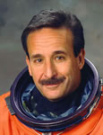

Lyndon B. Johnson Space Center
Houston, Texas 77058
|
National Aeronautics and Space Administration Lyndon B. Johnson Space Center Houston, Texas 77058 |
 |
Biographical Data |
||
Charles J. Camarda (Ph.D.)
SENIOR ADVISOR FOR INNOVATION, OFFICE OF CHIEF ENGINEER,
JOHNSON SPACE CENTER
PERSONAL DATA: Born in 1952 in Queens, New York. Charlie enjoys racquetball, runningand weightlifting. His father, Jack Camarda, resides in Queens, New York.
EDUCATION: Graduated from Archbishop Molloy High School, Jamaica, New York, in 1970; received a Bachelor of Science Degree in aerospace engineering from Polytechnic Institute of Brooklyn in 1974; a Master of Science Degree in Engineering Science from George Washington University in 1980; and a Doctorate in Aerospace engineering from Virginia Polytechnic Institute and State University in 1990.
ORGANIZATIONS: Associate Fellow, American Institute of Aeronautics and Astronautics.
AWARDS: NASA Certificates of Recognition (12); Sustained Superior Performance Awards (2); Special Achievement Awards (2); Technology Commercialization Awards (2); Space Station Program Team Excellence Award; NASA Group Achievement Award; NASA Superior Accomplishment Award; NASA Honor Award; One NASA Peer Award; Research and Development 100 Award from Industrial Research Magazine for one of the top 100 technical innovations in 1983, a Heat-Pipe-Cooled Sandwich Panel.
NASA EXPERIENCE: Upon completing his Bachelor’s Degree from the Polytechnic Institute of Brooklyn, Dr. Camarda began work for NASA’s Langley Research Center, Hampton, Virginia, in 1974. He was a Research Scientist in the Thermal Structures Branch of the Structures and Materials Division and was responsible for demonstrating the feasibility of a heat-pipe-cooled leading edge for space shuttle by analysis, laboratory experiments and aerothermal testing in Langley’s 8-foot High Temperature Tunnel. He conducted analytical and experimental research in heat pipes, structural mechanics and dynamics, heat transfer and numerical optimization for aircraft, spacecraft and space launch vehicles. While at Langley, Camarda earned his Master’s Degree from George Washington University in Engineering Science with an emphasis on mechanics of composite structures at elevated temperature and his Doctorate Degree from Virginia Polytechnic Institute and State University with emphasis on the development of advanced modal methods for efficiently predicting transient thermal and structural performance. In 1989, Dr. Camarda was selected to lead the Structures and Materials Technology Maturation Team for the National Aero-Space Plane (NASP) program, which was responsible for maturing materials and structures technologies necessary to enable the development of an airbreathing hypersonic vehicle capable of horizontal take-off to orbit. Camarda was selected to head the Thermal Structures Branch (TSB) in 1994 with responsibility for a research engineering staff, two major focused programs (the High-Speed Research (HSR) and Reusable Launch Vehicle (RLV) programs) and several structural test facilities including the Thermal Structures Laboratory. Some of the primary responsibilities of the TSB are the development of durable, lightweight metallic Thermal Protection Systems (TPS), advanced leading edges for hypersonic vehicles using carbon carbon material and heat pipes, reusable cryogenic tank systems and graphite-composite primary structure for RLV. Camarda has received more than 21 NASA awards for technical innovations and accomplishments. He also received a Research and Development 100 award from Industrial Research Magazine for one of the top 100 technical innovations of 1983 entitled “Heat-Pipe-Cooled Sandwich Panel.” He holds seven patents and one patent pending.
Selected as an astronaut candidate by NASA in April 1996, Dr. Camarda reported to the NASA Johnson Space Center in August 1996. He completed two years of training and evaluation that qualified him for flight assignment as a mission specialist. Dr. Camarda has been assigned technical duties in the Astronaut Office Spacecraft Systems/Operations Branch, was on the Expedition-8 back-up crew, served as Director, Engineering, Johnson Space Center, and was assigned to the NASA Engineering and Safety Center (NESC). Through the NESC, Dr. Camarda used his technical expertise to evaluate problems and supplement safety and engineering activities for Agency programs. Dr. Camarda flew as MS-5 on the Return to Flight mission STS-114 Discovery, and has logged more than 333 hours in space. Following his flight, he was the Director of Engineering at NASA’s Johnson Space Center and currently serves as Senior Advisor for Innovation to the Office of Chief Engineer, NASA Headquarters.
SPACE FLIGHT EXPERIENCE: STS-114 Discovery (July 26 through August 9, 2005) was the Return to Flight mission during which the Shuttle docked with the International Space Station and the crew tested and evaluated new procedures for flight safety and Shuttle inspection and repair techniques. After a two-week, 5.8 million mile journey in space, the orbiter and its crew of seven astronauts returned to land at Edwards Air Force Base, California.
MARCH 2014